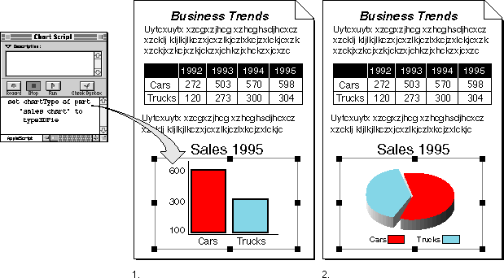
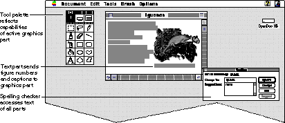

Extensibility
The OpenDoc architecture is designed to be extended. Using built-in features, you can enhance the capabilities of and communications among your parts in a compound document, and you can even develop component software that goes well beyond the standard OpenDoc model of parts and compound documents.The main point of departure for enhancing OpenDoc is the extension mechanism, a general method for adding programming interfaces to objects. Additional mechanisms are the focus-module and dispatch-module interfaces, which allow you to add new kinds of focus and new kinds of event handling to your part editors.
OpenDoc already includes several instances of extensions, one of which is its support for scripting. This section introduces the features of the scripting extension and then summarizes how you can add other extensions for other purposes.
Scripting Support
A major feature available with OpenDoc is the ability to make parts scriptable, allowing users to customize their applications to handle user-specific tasks. Working in a compound-document environment with scriptable parts, sophisticated users can use standard document-editing procedures to add application-like functionality to parts. Likewise, programmers can create complex client applications and present them in the form of compound documents.The scripting model supported by OpenDoc is called content-centered scripting, or scripting based on a content model. For a part to be scriptable, its part editor must have a content model, which lists the content objects and operations that the part makes available for scripting. OpenDoc provides a way to deliver scripting messages, or semantic events, from a scripting system to a part editor, which responds to the events. OpenDoc supports any scripting system based on the Open Scripting Architecture (OSA). AppleScript, Frontier, and QuicKeys on the Mac OS platform are examples of OSA-based scripting systems. The Mac OS implementation of the Open Scripting Architecture is described in Inside Macintosh: Interapplication Communication.
Your part editor can provide increasing levels of scripting support, including scriptability, recordability, and customizability. They are described in Chapter 9, "Semantic Events and Scripting."
Scripts can be attached to parts, and a user-interface control such as a button might consist of nothing more than a part that executes a script when activated. Script editors also can send semantic events to parts. Figure 1-21 shows an example of a script editor sending a semantic event based on a scripting command ("Set chartType of part "sales chart" to type3DPie") to a document. The root part's semantic interface decodes the object specifier in the event (part "sales chart") and determines the content object to which the object specifier applies (in this case an embedded part). The embedded part then performs the specified operation.
The scripting support in OpenDoc is an enhancement of OpenDoc's basic capabilities and is one of several extensions provided with OpenDoc. It is recommended, but not required, that all part editors support scripting.
Figure 1-21 Sending a semantic event to an embedded part

Other Extensions
The basic architecture of OpenDoc is primarily geared toward mediating the geometric interrelationships among parts, their sharing of user events, and their sharing of storage. Direct communication among parts for purposes other than frame negotiation is mostly beyond the basic intent of OpenDoc. If separate parts in a document (or across documents) need to share information, or if one part needs to manipulate the contents or behavior of another part, you need to extend the capabilities of OpenDoc in some way.OpenDoc allows you to add these kinds of capabilities to part editors through its extension mechanism. A part editor can create an associated extension object that implements an additional interface to that editor's parts. Other part editors can then access and call that interface.
The OpenDoc support for scripting is an example of an extension interface, as noted in the previous section. Other extension interfaces can, however, provide faster interaction and lower-level communication between parts than is possible by passing semantic events. A word processor, for example, might construct an extension interface to give related part editors or other tools access to its text. A developer of a large software solutions package might use extensions to provide greater integration among its software components.
Figure 1-22 shows some possible examples of communication through OpenDoc extensions. The figure shows a text part and a graphics part that share a tool palette (a third part). The palette displays the appropriate tools for the currently active part and, when the user makes a tool selection, communicates the information back to the active part. A spelling checker provides its service to all parts in the document and accesses their text through their extensions. Furthermore, the text part and graphics part in this figure communicate directly through an extension mechanism; the text part updates the graphics part with the current figure number and caption.
Figure 1-22 Parts communicating through extensions

In addition to the scripting extension, OpenDoc includes existing extensions and other kinds of enhancements that allow you to extend the OpenDoc Part Info dialog box, extend the capabilities of the OpenDoc document shell, or provide for additional kinds of user events or foci. Use of the OpenDoc extension mechanism is discussed further in Chapter 10, "Extending OpenDoc."